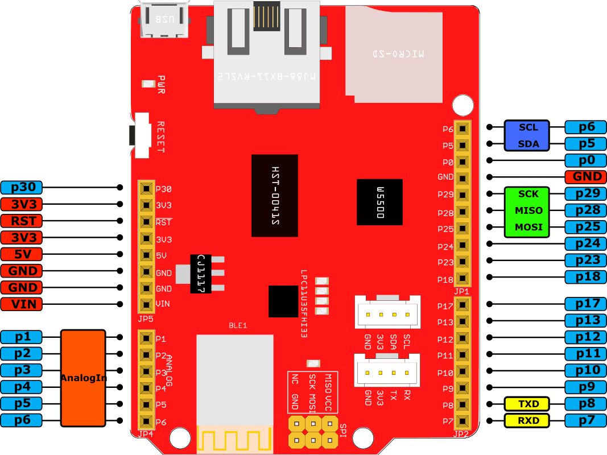
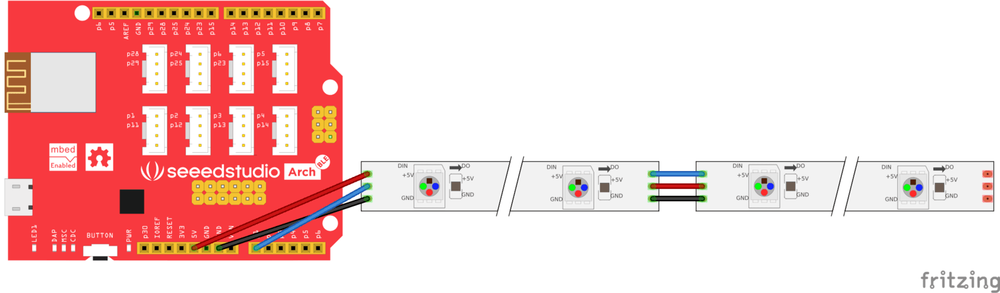
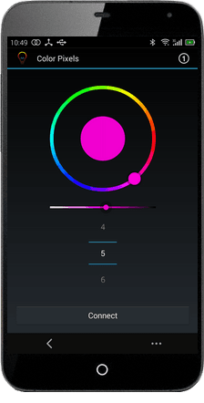
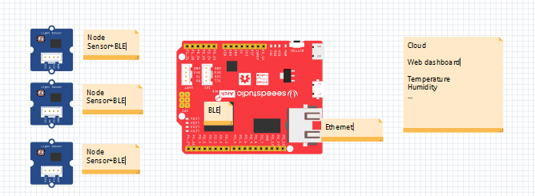
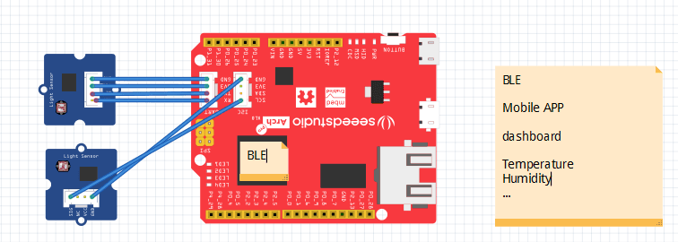

Arch Link
Arch Link is an mbed enabled development board based on Nordic nRF51822 and WIZnet W5500 ethernet interface. With Arduino form factor, Grove connectors and micro SD interface, it is extremely easy to create a bluetooth low energy device.
Features
- mbed enabled
- Online IDE
- Easy to use C/C++ SDK
- Handy libraries
- CMSIS DAP based on LPC11U35
- Drag-n-drop programming
- Debug using CMSIS DAP standard
- USB virtual serial for communication
- Arduino form factor with Grove connectors
- I2C and UART connecter on board
- Nordic nRF51822 Multi-protocol Bluetooth® 4.0 low energy/2.4GHz RF SoC
- ARM Cortex M0 processor
- 256kB flash/16kB RAM
- Configurable I/O mapping for digital I/O
- WIZnet W5500 Ethernet
- Supports following Hardwired TCP/IP Protocols : TCP, UDP, ICMP, IPv4, ARP, IGMP, PPPoE
- Supports Power down mode
- Supports Wake on LAN over UDP
- Supports High Speed Serial Peripheral Interface(SPI MODE 0, 3)
- Internal 32Kbytes Memory for Tx/Rx Buffers
- 10BaseT/100BaseTX Ethernet PHY embedded
- with RJ45 connector
- USB Micro B connector
- Micro SD Card connector
Pinout

Get Started

- Click this link to login or signup to mbed
- Import the mbed_blinky program
- Click the Compile icon of the top toolbar to compile the program, then download a compiled hex file.
- Drag-n-drop the downloaded hex file into the MBED disk
You can open main.cpp to change the program. For example, use the following code to blink the LED every 0.1s
#include "mbed.h"
DigitalOut led(p30); // on-board led is connected to p30
int main()
{
while (true) {
led = !led;
wait(0.1);
}
}
Note
If you get a compiling error that 'device.h' is not find, try to update the mbed library to the latest revision in your program.
Applications
1. Color Pixels, a colorful LED strip, can be controlled by mobile phone.
-
-
- 
- 
-
- Download BLE_Color_Pixels_Arch_BLE.hex
- Copy the hex file to the MBED disk of your Arch BLE
- Download the Color Pixels Android app
- If you want to change the program, click this link to import the Color Pixels program to mbed online IDE.
- If the BLE device is disconnected frequently, we can improve the stability by changing the BLE parameters - Advertising Duration (main.cpp), Min Interval and Max Interval (nRF51822/projectconfig.h)
#define CFG_GAP_CONNECTION_MIN_INTERVAL_MS 20 /**< Minimum acceptable connection interval */
#define CFG_GAP_CONNECTION_MAX_INTERVAL_MS 200 /**< Maximum acceptable connection interval */
2. You can use the Arch Link as a web dashboard.
- 
3. You can alse use the Arch Link as a Mobile APP dashboard.
- 
Update or Restore Firmware
The latest firmware version for the Arch Link is v0203 built at Jun 4 2015. To check your firmware version and built date, open the MBED.HTM or DETAILS.TXT of your MBED disk in a text editor.
Changelog:
Firmware:
The firmware v0203 2015-06-04 for Arch Link
To flash a new firmware:
- Hold the Arch Link's button and power on it
- A CRP DISABLD disk will show up
- On Windows, replace firmware.bin with the above firmware
- On Linux/Mac, use command: dd if={new_firmware.bin} of={firmware.bin} conv=notrunc
Resources
See Also
Copyright (c) 2008-2016 Seeed Development Limited (
www.seeedstudio.com /
www.seeed.cc)
This static html page was created from http://www.seeedstudio.com/wiki